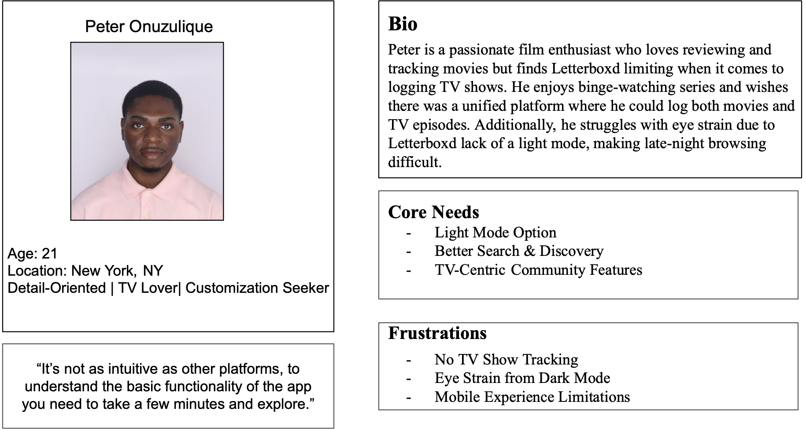

Phase 1: Define and Research
Creating a persona
Empathy Map
Understanding user behavior and motivations.

User Segments
Through research, I identified three key user groups:
Letterboxd is a popular social platform for movie lovers to log, review, and discover films. While widely used, the platform has usability and accessibility challenges that impact diverse users. This redesign project aimed to improve usability, accessibility, and overall user experience by addressing pain points and introducing new features, including expanding support for TV shows.
Have you ever wanted to log a TV show on Letterboxd, only to realize the platform doesn’t support episodic content? While Letterboxd is a favorite among film lovers, its lack of TV show tracking leaves users frustrated. Additionally, the absence of light mode and accessibility features like text-to-speech make the platform harder to use for diverse audiences. To address these challenges, this redesign enhances navigation, accessibility, and content expansion while preserving Letterboxd’s core identity.
Understanding user behavior and motivations.
Through research, I identified three key user groups:
The Letterboxd Profile page was redesigned to provide a more personalized, accessible, and data-driven experience.
The redesigned Letterboxd platform offers a more intuitive, accessible, and personalized experience for movie lovers.